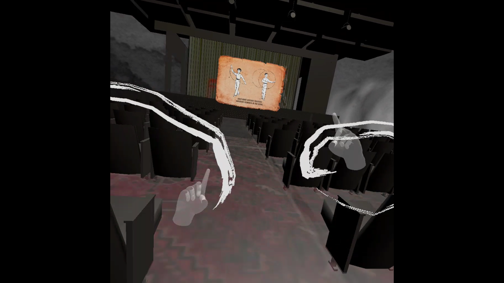

Fighting in the Dark
unity development
Collaborator: Milad H. Mozari
Through Milad’s interview and research based on Beijing Opera performer Ghaffar Pourazar’s life as an Iranian immigrant, to a UK-based animation professor, and ultimately key figure in Beijing Opera as the Monkey King (Sun Wu Kong). This Virtual Reality experience creates a parallel narrative of the performer’s life, by rediscovering Pouazar’s movement through digital inspired processes. The user is able to learn Beijing Opera hand gestures by following the instruction and use them as triggers to explore through the story. The actual and interpretative image and video sources “question the parallel between the historical and contemporary of the Sino-Persian”, or “China-Iran” dynamic.
